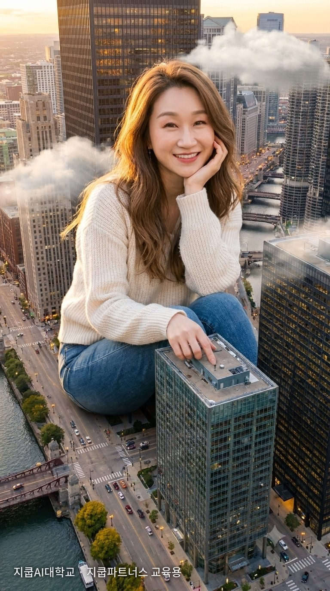

오늘의 프롬프트AI로사쌤 · 16번
지쿱AI대학교 · 지쿱파트너스 교육용 프롬프트
빌딩보다 큰 거인이 된 나, 사진에서 영상까지
먼저 사진을 만들고, 그 사진으로 영상을 만드는 두 단계예요. 남녀 누구나 쓸 수 있어요.
1단계사진 만들기

제미나이나 챗GPT에 본인 사진을 먼저 올리고, 아래 프롬프트를 붙여넣으세요.
업로드한 사진 속 인물을 주인공으로 한 실사 합성 사진. 얼굴을 그대로 반영하고 이목구비, 얼굴형, 헤어스타일, 안경을 바꾸지 말 것. 여성이면 여성, 남성이면 남성으로 표현. 화사하게 미소 짓는 밝은 얼굴.
옷은 편안한 아이보리 니트와 청바지.
장면: 인물이 고층 빌딩보다 훨씬 큰 거인이 되어 도심 한가운데 빌딩들 사이에 편안히 앉아 있는 모습. 무릎 높이에 고층 빌딩 옥상이 오고, 한 손으로 턱을 괴고 다른 손 손가락으로 빌딩 옥상을 살짝 짚은 채 카메라를 향해 웃고 있음. 아래 도로에는 장난감처럼 작은 자동차와 가로수, 다리와 강. 머리 주변으로 구름이 걸려 있음.
구도: 드론이 얼굴 높이에서 찍은 듯한 구도로 얼굴과 상반신이 화면에 크게 보이고 아래로 도시가 펼쳐지게. 해 질 녘 황금빛 햇살이 얼굴과 빌딩 유리를 따뜻하게 비춤.
고해상도 4K 실사, 피부결과 머리카락, 빌딩 창문까지 선명하게, 자연스러운 손가락, 이미지 안에 글자·간판·로고·워터마크 없음, 세로 9:16.
2단계영상 만들기
1단계에서 만든 사진을 영상 도구에 첫 장면으로 올리고, 아래 프롬프트를 붙여넣으세요.
첫 프레임 이미지 속 인물의 얼굴, 헤어스타일, 안경, 의상을 끝까지 그대로 유지. 인물은 계속 빌딩보다 큰 거인 크기를 유지.
0~3초: 아래 도로에서 작은 자동차들이 움직이고 구름이 인물의 어깨 옆을 천천히 흘러감. 인물이 도시를 내려다보며 미소 지음.
3~6초: 인물이 손가락으로 구름 한 조각을 살짝 건드려 흩어지게 하고, 지나가는 작은 헬리콥터를 신기한 듯 눈으로 따라감.
6~10초: 카메라를 보며 손을 천천히 흔들고 한국어로 말한다: "오늘은 제가 이 도시에서 제일 커요."
카메라는 얼굴 높이에서 인물 주위를 아주 천천히 도는 드론 샷. 소리는 멀리서 들리는 도시 소음과 바람, 웅장하고 경쾌한 음악. 거인의 움직임은 크기에 맞게 느리고 묵직하게.
4K 고해상도 실사 영상, 10초 원테이크, 얼굴과 손 변형 없음, 대사는 입 모양에 맞춰 자연스럽게, 화면에 자막·글자·로고 없음.
지쿱AI대학교 · 지쿱파트너스 교육용 프롬프트
출처 · AI로사쌤 · 무단 복제와 재배포를 금합니다